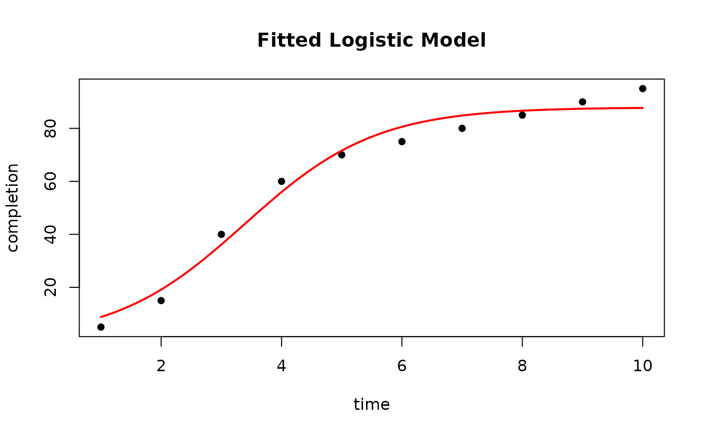
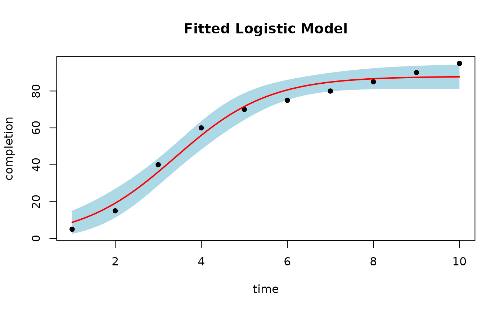

Plots the observed data with the fitted sigmoidal curve and, optionally, a confidence band. The data, column names and model type are recovered from the fitted object, so no further arguments are required.
Usage
# S3 method for class 'pra_sigmoidal_fit'
plot(
x,
main = NULL,
col = "red",
conf_level = NULL,
n_points = 100,
xlab = NULL,
ylab = NULL,
ci_col = "lightblue",
pch = 16,
...
)Arguments
- x
An object of class
"pra_sigmoidal_fit"returned byfit_sigmoidal().- main
Optional plot title.
- col
Color of the fitted curve.
- conf_level
Confidence level for the band, for example
0.95. IfNULL(default), no band is drawn.- n_points
Number of points used to draw the fitted curve.
- xlab, ylab
Optional axis labels. Default to the fitted column names.
- ci_col
Fill color for the confidence band.
- pch
Plotting symbol for the observed data.
- ...
Additional arguments passed to
plot_sigmoidal().
See also
plot_sigmoidal(), which takes the data and model type explicitly.
Examples
data <- data.frame(time = 1:10, completion = c(
5, 15, 40, 60, 70, 75, 80, 85, 90, 95
))
fit <- fit_sigmoidal(data, "time", "completion", "logistic")
plot(fit)

plot(fit, conf_level = 0.95)
